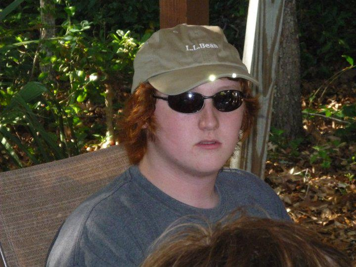

About Me
Hi! I was born in Orlando and have lived here my whole life. However, I was also born a Gator. I've always been surrounded by Florida Gator paraphernalia, from Gator pillows to Gator curtains to Gator clothes. Heck, my room was even painted in orange and blue. While I did go to the university for two years, I found that not only was my major wrong for me but my desire to go through school was gone. I decided to work instead, spending 4 years building online classes. This experience got me excited to get into coding, specifically web development. My hope is to take my interst and turn it into a life-long passion and career.
When I'm not doing work, you'll much find me playing some kind of game. whether it's video games, board games, sports, or even school math events, I enjoy the competitiveness of it. This at one point led me to become a coach for a semi-professional League of Legends team (League of Legends is a 5v5, online game). While I had to stop after only half a year due to time issues with the team being based in Australia, the fun that comes from comptition ends up being a part of most of my hobbies. That's not to say I only play to win, but I will try to win if possible.
Connect with Me